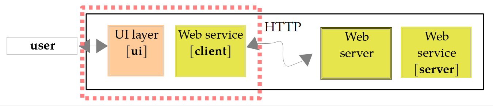

13. Servicios web
13.1. Introducción
En el capítulo anterior presentamos varias aplicaciones cliente/servidor TCP/IP. Como los clientes y el servidor intercambian líneas de texto, pueden escribirse en cualquier lenguaje. El cliente solo necesita conocer el protocolo de comunicación que espera el servidor.
Los servicios web también son aplicaciones de servidor (TCP/IP). Tienen las siguientes características:
- están alojados en servidores web, y el protocolo de intercambio cliente/servidor es HTTP (HyperText Transfer Protocol), un protocolo construido sobre TCP/IP, que exploramos en el capítulo anterior;
- el servicio web tiene un protocolo de comunicación estándar, independientemente del servicio prestado. Un servicio web ofrece diversos servicios: S1, S2…, Sn. Cada uno de estos servicios espera parámetros proporcionados por el cliente y devuelve un resultado al cliente. Para cada servicio, el cliente necesita saber:
- cómo especificar el servicio Si;
- la lista de parámetros que debe proporcionar y sus tipos;
- el tipo de resultado que devuelve el servicio. Una vez conocidos estos elementos, el diálogo cliente/servidor sigue el mismo formato, sin importar qué servicio web se consulte. Esto estandariza la comunicación del cliente;
- para protegerse de los ataques desde Internet, muchas organizaciones abren solo ciertos puertos de sus servidores al exterior: principalmente los puertos 80 (HTTP) y 443 (HTTPS) para el servicio web. Todos los demás puertos están bloqueados. En consecuencia, las aplicaciones cliente/servidor como las descritas en el capítulo anterior suelen limitarse a la red privada de la organización (intranet). Alojar un servicio en un servidor web lo hace accesible a toda la comunidad de Internet;
- el servicio web puede considerarse un objeto remoto: los servicios que ofrece se convierten entonces en métodos de ese objeto. Un cliente puede utilizar este objeto remoto como si fuera local, mediante un objeto intermediario llamado proxy, que oculta toda la comunicación de red. Esto permite construir un cliente independiente de esta capa: si la capa cambia, no es necesario modificar el resto del cliente;
- al igual que con las aplicaciones cliente/servidor TCP/IP del capítulo anterior, el cliente y el servidor pueden escribirse en cualquier lenguaje de programación. Intercambian líneas de texto compuestas por dos partes: los encabezados exigidos por el protocolo HTTP y el cuerpo del mensaje, cuyo formato se acuerda entre el cliente y el servidor.
La arquitectura de una aplicación cliente/servidor basada en servicios web es la siguiente:

Es una extensión de la arquitectura en capas del capítulo 6, a la que se agregan capas especializadas de comunicación de red: el cliente del servicio web en el lado del cliente y el propio servicio web en el lado del servidor. Ya nos hemos encontrado con una arquitectura similar en el servidor TCP de cálculo del impuesto (versión 8) del capítulo anterior.
13.1.1. Ayer: SOAP y WSDL
En la década de 2000, los servicios web seguían con mayor frecuencia el estándar SOAP (Simple Object Access Protocol). El cliente enviaba una solicitud HTTP cuyo cuerpo era un documento XML: un “sobre” que contenía el nombre del método llamado y sus parámetros. El servidor respondía con otro sobre XML que contenía el resultado. Cada servicio estaba descrito por un documento XML en formato WSDL (Web Services Description Language), disponible en la URL del servicio seguida de [?wsdl]: enumeraba los métodos, sus parámetros y sus tipos. A partir de este documento, ciertas herramientas generaban automáticamente el proxy del servicio.
En la JVM, estos servicios se definían mediante la API y JAX-WS: una clase anotada [@WebService], cuyos métodos públicos (que podían anotarse con [@WebMethod]) se convertían en los métodos del servicio; la herramienta [wsimport] generaba el proxy del cliente a partir del WSDL. JAX-WS formó parte del JDK desde Java 6 hasta Java 10; se eliminó en Java 11 (JEP 320) y ahora existe fuera del JDK, con el nombre de Jakarta XML Web Services. Kotlin, que se lanzó (en su versión 1.0) en 2016, no existía realmente en esa época: JAX-WS puede utilizarse desde Kotlin como cualquier biblioteca de Java, pero los nuevos servicios rara vez la utilizan ya. Entre las razones de este cambio están lo engorroso de XML y de los sobres SOAP, la complejidad de los estándares asociados (WS-Security, WS-Addressing, etc.) y la dificultad de llamar a estos servicios desde un navegador.
13.1.2. Hoy: REST y JSON
La mayoría de los servicios web actuales siguen el estilo REST (REpresentational State Transfer) e intercambian documentos JSON (JavaScript Object Notation, presentado en el capítulo 5). El estilo REST se basa en los siguientes principios:
- el servicio expone recursos, cada uno designado por una URL: [/tax], [/clients/12], [/clients/12/orders];
- se accede a estos recursos mediante los métodos (también llamados verbos) del protocolo HTTP, cada uno de los cuales tiene un significado específico;
- el resultado de la acción se indica mediante el código de estado HTTP de la respuesta;
- el cuerpo de las solicitudes y de las respuestas es, con mayor frecuencia, un documento JSON, que es más compacto y más simple que XML;
- el servicio es sin estado: cada solicitud contiene toda la información necesaria para procesarla; el servidor no conserva ninguna información de una solicitud a la siguiente para un cliente determinado.
Los métodos HTTP más utilizados son los siguientes:
Método | Uso | Ejemplo |
GET | Leer un recurso; los parámetros, si los hay, van en la URL | GET /clients/12 |
POST | Crear un recurso o solicitar un procesamiento; los datos van en el cuerpo de la solicitud | POST /clients |
PUT | Reemplazar un recurso | PUT /clients/12 |
PATCH | Modificar una parte de un recurso | PATCH /clients/12 |
DELETE | Eliminar un recurso | DELETE /clients/12 |
Los códigos de estado, que se presentaron en el capítulo anterior, adquieren aquí todo su sentido:
Código | Significado |
200 OK | La solicitud se realizó correctamente; el cuerpo de la respuesta contiene el resultado |
201 Created | Se creó el recurso; el encabezado [Location] indica su URL |
204 No Content | La solicitud se realizó correctamente; la respuesta no tiene cuerpo |
400 Bad Request | La solicitud no es válida (parámetro ausente o no válido, etc.) |
404 Not Found | El recurso solicitado no existe |
415 Unsupported Media Type | No se acepta el tipo del documento enviado (encabezado [Content-Type]) |
500 Internal Server Error | Se produjo un error inesperado en el servidor |
Un servicio REST no tiene un equivalente obligatorio de WSDL. Sin embargo, es una práctica habitual describirlo mediante un documento OpenAPI (antes Swagger), en formato JSON o YAML, a partir del cual las herramientas pueden generar documentación, páginas de prueba y clientes. Volveremos sobre esto más adelante.
Por último, mencionemos gRPC, diseñado por Google: los métodos del servicio y sus mensajes se describen en un archivo [.proto], a partir del cual las herramientas generan el servidor y el cliente, tal como se hacía en la época de WSDL; los mensajes se codifican en un formato binario compacto (Protocol Buffers) y se transmiten mediante HTTP/2. gRPC es muy eficiente y popular para la comunicación entre servicios dentro de una misma organización, pero no resulta adecuado para los navegadores. Está disponible en la JVM con la biblioteca [grpc-java], complementada para Kotlin por [grpc-kotlin] (las funciones [suspend] y [Flow], capítulo 9), que no utilizaremos.
13.1.3. Spring Boot y Spring MVC
Para escribir nuestros servicios web, utilizaremos Spring Boot. En el capítulo 6, utilizamos el contenedor de inyección de dependencias de Spring Framework. Este framework también incluye un módulo web, Spring MVC, que asocia una URL y un método HTTP con una función mediante anotaciones: [@RestController] en la clase, [@GetMapping], [@PostMapping]… en sus métodos. Spring Boot (versión 1.0 en 2014, versión 4 en noviembre de 2025, con Spring Framework 7) simplifica la implementación de Spring:
- se configura automáticamente la aplicación según las bibliotecas disponibles: si Spring MVC y Jackson están presentes, prepara todo lo necesario para un servicio web JSON, sin una sola línea de configuración;
- integra el servidor web dentro de la aplicación: el servidor Tomcat (versión 11) es una simple biblioteca, iniciada por el programa principal. Por lo tanto, no es necesario instalar un servidor web o un servidor de aplicaciones independiente (Tomcat, GlassFish, WildFly…), en el que antes se desplegaba la aplicación como un archivo [.war];
- proporciona starters: dependencias que agrupan todo lo necesario para un caso de uso específico. El starter [spring-boot-starter-webmvc] incluye Spring MVC, Tomcat, Jackson 3 (capítulo 5) y el registro (SLF4J y Logback);
- proporciona una lista de materiales (BOM), que especifica las versiones de todas estas bibliotecas, compatibles entre sí, y un plugin de Gradle, [org.springframework.boot], que lanza la aplicación ([gradlew bootRun]) y la empaqueta en un único archivo ejecutable ([.jar]) ([gradlew bootJar]).
Spring está escrito en Java, pero trata a Kotlin como un lenguaje de primera clase desde Spring Framework 5 (2017): su documentación ofrece ejemplos en ambos lenguajes, admite los tipos que aceptan valores nulos de Kotlin, puede llamar a los constructores primarios y a sus valores predeterminados, y proporciona funciones de extensión específicas de Kotlin ([runApplication], [getBean<T>()], [registerBean<T>()] del capítulo 6…). Spring Boot no es la única solución: Jakarta EE (antes Java EE) define el estándar de API JAX-RS (Jakarta RESTful Web Services), y frameworks como Quarkus, Micronaut y Helidon también se utilizan ampliamente con Kotlin. Cabe destacar especialmente Ktor, el framework web de JetBrains escrito en Kotlin para Kotlin: sus rutas se describen mediante un lenguaje específico de dominio (DSL) en lugar de anotaciones, y sus manejadores son funciones [suspend] (capítulo 9). Sin embargo, Spring Boot es el más utilizado y se apoya de manera natural en lo que vimos en el capítulo 6.
13.2. Un primer servicio web
Vamos a construir nuestra primera aplicación cliente/servidor con la siguiente arquitectura simplificada:

Los proyectos de este capítulo forman una compilación multiproyecto de Gradle (capítulo 6), la carpeta [13-web-services]:
El archivo [settings.gradle.kts] enumera los subproyectos:
- líneas 3–6: el plugin que permite a Gradle descargar él mismo el JDK 25 si no lo encuentra en la máquina (capítulo 2);
- línea 11: los seis subproyectos, identificados por los nombres de sus carpetas;
- línea 14: la compilación del capítulo 6 se incluye en esta (compilación compuesta, ya utilizada en los capítulos 10 y 11): los proyectos [WsTax] y [ClientWsTax] pueden depender de los módulos de la versión 5 de la aplicación de impuestos [TaxV5] mediante sus coordenadas ([examples.tax:tax-business:5.0]), y Gradle compilará estos módulos a partir de su código fuente si es necesario.
El proyecto raíz declara los plugins utilizados por los subproyectos, junto con sus versiones, sin aplicarlos:
- línea 4: el plugin de Kotlin, que ya conocemos;
- línea 5: el plugin [all-open] para Spring, utilizado en el capítulo 6. En Kotlin, las clases y sus funciones son finales de forma predeterminada; sin embargo, Spring necesita derivar subclases (proxies) de ellas para algunas de sus clases. Este plugin hace abiertas las clases anotadas por Spring ([@Configuration], [@Component], [@RestController], [@SpringBootApplication]…) y sus métodos;
- Línea 6: el plugin de Spring Boot.
Los proyectos ya están configurados en el código del curso: el lector solo necesita abrir la carpeta [13-web-services] en IntelliJ IDEA, que la reconoce como una compilación de Gradle, o ejecutar el comando de Gradle indicado en esa carpeta. Los servicios se lanzan mediante [gradlew :WsHello:bootRun] (la ruta [:WsHello] designa el subproyecto), y los clientes de consola mediante [gradlew -q :ClientWsHello:run]. El comando [gradlew build] compila todos los proyectos a la vez.
Para crear usted mismo un proyecto Spring Boot, lo más sencillo es utilizar el sitio web Spring Initializr: allí se selecciona “Gradle - Kotlin” (un proyecto Gradle cuyos archivos de compilación están escritos en Kotlin), el lenguaje Kotlin, la versión de Spring Boot, el nombre del proyecto y sus dependencias (en este caso, “Spring Web”), y luego se descarga un archivo ZIP que contiene un proyecto listo para usar: los archivos [build.gradle.kts] y [settings.gradle.kts], el wrapper de Gradle, la clase principal y el archivo [application.properties]. IntelliJ IDEA (edición Ultimate) ofrece el mismo asistente. Para un proyecto Kotlin, Spring Initializr agrega automáticamente las dependencias [kotlin-reflect] y [jackson-module-kotlin], de las que hablaremos más adelante.
13.2.1. El lado del servidor

El archivo [build.gradle.kts] del proyecto [WsHello] es el siguiente:
Comentarios:
- Líneas 3–7: los tres plugins, sin versión especificada; la versión la determina el proyecto raíz. El plugin de Spring Boot agrega al proyecto la tarea [bootRun], que compila y ejecuta la aplicación, y la tarea [bootJar], que crea un archivo llamado [build/libs/WsHello-1.0.jar] que contiene la aplicación y todas sus dependencias, el cual se lanza luego mediante [java -jar build/libs/WsHello-1.0.jar]. No es necesario aplicar el plugin [application]: el plugin de Spring Boot encuentra la clase principal, buscando la función [main];
- Línea 19: la versión 4.1.1 de Spring Boot (la versión del plugin). La función [platform] importa al proyecto las versiones de varios cientos de bibliotecas, seleccionadas y probadas en conjunto por el equipo de Spring Boot. Por eso las dependencias de las líneas 21–23 no tienen versión. Esto equivale al proyecto padre [spring-boot-starter-parent] en un proyecto Maven;
- línea 21: el starter web. Proporciona Spring MVC (Spring Framework 7.0), el servidor Tomcat 11 integrado, Jackson 3 y el registro;
- línea 23: la biblioteca de reflexión de Kotlin. La reflexión de Java ([java.lang.reflect]) solo ve una parte de lo que expresa el código Kotlin: no sabe si un parámetro acepta valores nulos ([String?]), si tiene un valor predeterminado ni cuál es el constructor primario de una clase. Spring lee esta información mediante [kotlin-reflect] (que decodifica los metadatos que el compilador de Kotlin almacena en cada archivo [.class]): veremos que la utiliza para los parámetros opcionales. La versión utilizada es la del plugin de Kotlin.
- línea 31: la opción [-java-parameters] del compilador, que almacena los nombres de los parámetros de las funciones en los archivos [.class]. Spring la necesita para asociar un parámetro de función ([name]) con el parámetro del mismo nombre de una URL, y Jackson la necesita para asociar los parámetros del constructor de una clase de datos con las propiedades de un documento JSON (capítulo 5). El plugin de Spring Boot ya habilita esta opción cuando detecta el plugin de Kotlin; la incluimos aquí para hacerla explícita;
- líneas 35–38: los programas lanzados por Gradle escriben su salida en UTF-8 para que los caracteres acentuados se muestren correctamente en Windows (capítulo 2).
La clase principal es la siguiente:
- línea 7: la anotación [@SpringBootApplication] combina tres anotaciones: [@Configuration] (la clase puede definir beans, como en el capítulo 6), [@EnableAutoConfiguration] (configuración automática según las bibliotecas disponibles) y [@ComponentScan] (Spring busca las clases anotadas, como controladores, configuraciones, etc., en el paquete de esta clase y en sus subpaquetes);
- Línea 8: la clase no tiene cuerpo; solo sirve para llevar la anotación. Como está anotada (indirectamente) con [@Configuration], el plugin [plugin.spring] la hace no final. Aquí esto no es esencial: comprobamos que la aplicación también se inicia cuando la clase sigue siendo final, ya que Spring no necesita derivar una clase de configuración que no define ningún bean. Sin embargo, una clase de configuración que define beans mediante funciones [@Bean], como el servicio de cálculo del impuesto, provocaría el error [@Configuration class '...' may not be final] que encontramos en el capítulo 6: el plugin se encarga de esto por usted;
- líneas 10–12: el programa principal es una función de nivel superior, compilada en la clase [WsHelloApplicationKt]. La función [runApplication<WsHelloApplication>(*args)], una función de extensión de Spring Boot escrita en Kotlin, reemplaza la llamada de Java [SpringApplication.run(WsHelloApplication.class, args)]: el tipo de la clase de configuración se pasa como argumento de tipo ([reified], capítulo 4), y el operador [*] (spread) pasa los elementos del arreglo [args] al parámetro [vararg] de la función (capítulo 3). [runApplication] lee la configuración (archivo [application.properties], variables de entorno, argumentos de la línea de comandos), crea el contenedor de Spring y sus beans, inicia el servidor Tomcat y luego devuelve el control. Sin embargo, el programa no se detiene: los hilos de Tomcat esperan solicitudes hasta que se termina la aplicación (Ctrl-C).
La configuración de la aplicación se almacena en el archivo [src/main/resources/application.properties]:
- línea 2: el nombre de la aplicación;
- línea 4: el servidor escucha en el puerto 5100 (8080 de forma predeterminada). Este valor también podría pasarse como argumento: [gradlew :WsHello:bootRun --args=--server.port=5100], o mediante la variable de entorno [SERVER_PORT];
- línea 6: de forma predeterminada, Spring Boot muestra al iniciarse un gran banner con texto ASCII; lo eliminamos;
- línea 8: el formato de los mensajes de registro. El formato predeterminado es muy completo (fecha, nivel, ID del proceso, nombre de la aplicación, hilo, nombre completo de la clase, mensaje), pero produce líneas muy largas. Lo reduciremos a la hora, el nivel del mensaje, el nombre del hilo, el nombre corto de la clase emisora ([%logger{0}]) y el mensaje.
El servicio web propiamente dicho es la clase [HelloController]. Proporciona una función que devuelve la cadena [Hello Mrs xx], donde xx es el nombre recibido:
Comentarios:
- Línea 8: la anotación [@RestController] designa la clase como un controlador: Spring crea una única instancia (un singleton) de ella al iniciarse y le dirige las solicitudes HTTP cuya URL corresponde a una de sus funciones. El resultado de cada método se envía tal cual al cliente, en el cuerpo de la respuesta;
- líneas 12–13: la anotación [@GetMapping("/")] asocia el método HTTP GET con la URL [/] (la raíz del sitio) y con la función [home], que devuelve un texto que explica cómo utilizar el servicio. La función tiene un cuerpo de expresión ([= ...]): su tipo, [String], se infiere. Las llaves en [{name}] no tienen nada de especial en una cadena de Kotlin: solo el carácter [$] introduce una plantilla;
- Líneas 18–19: la plantilla de URL (conocida como path) [/hello/{name}] contiene una variable [{name}]: corresponde a cualquier segmento de la URL ubicado después de [/hello/]. Así, la URL [/hello/Carla%20Bruni] asigna el valor [Carla Bruni] a [{name}] (el código [%20] representa un espacio en una URL). La anotación [@PathVariable] indica a Spring que pase este valor al parámetro de la función del mismo nombre: esto es el enlace de datos (data binding). La función devuelve una cadena, construida mediante una plantilla: esta cadena se envía tal cual al cliente como un documento de texto (tipo [text/plain]);
- líneas 22–23: el mismo proceso, pero la función devuelve un objeto de tipo [Greeting]. Spring lo serializa a JSON mediante Jackson (capítulo 5) y lo envía al cliente como un documento de tipo [application/json]. Este es el formato estándar de la respuesta de un servicio web REST;
- línea 26: el tipo del resultado, una clase de datos (capítulo 4) anidada dentro del controlador (el equivalente de un record de Java). Jackson la serializa mediante sus accesores [getName()] y [getMessage()], generados por el compilador: cada propiedad se convierte en una propiedad JSON con el mismo nombre.
El servicio se lanza con el comando [gradlew :WsHello:bootRun], ingresado en la carpeta [13-web-services] (o [..\gradlew bootRun] ingresado en la carpeta [WsHello]: el wrapper está en la raíz del proyecto). El directorio de ejecución de la aplicación es el del subproyecto. Muestra su registro (el curso ha abreviado las rutas de la línea 2 como [...] y omitido los mensajes de Gradle):
- Línea 2: el inicio de la aplicación, la versión de Java y el directorio de ejecución, que es el directorio del proyecto. Observe el nombre [WsHelloApplicationKt]: Spring Boot nombra la aplicación según la clase que contiene la función [main], en este caso la clase generada por el compilador de Kotlin para el archivo [WsHelloApplication.kt], y no la clase [WsHelloApplication];
- línea 3: Spring permite definir perfiles (desarrollo, pruebas, producción, etc.) que activan configuraciones distintas (archivos [application-dev.properties], etc.). Aquí no hay ningún perfil activo;
- Líneas 4–6: se crea el servidor Tomcat integrado; escuchará en el puerto 5100;
- línea 7: el contenedor de Spring está listo: ha creado sus beans, incluido nuestro controlador;
- líneas 8–9: Tomcat ya acepta conexiones; la aplicación está lista. El inicio tardó unos quince segundos en nuestra máquina de pruebas, lo cual es bastante lento (y estaba ocupada con otras tareas); normalmente toma dos o tres segundos;
- líneas 10–12: estos mensajes aparecieron durante la primera solicitud: el servlet de Spring [DispatcherServlet], que recibe todas las solicitudes y las distribuye entre los métodos del controlador, solo se inicializa en este momento. Un servlet es un componente de Java que procesa solicitudes en un servidor web como Tomcat (Jakarta Servlet); Spring está construido sobre esto. El nombre del hilo, [http-nio-5100-exec-1], indica que la solicitud la procesa uno de los hilos del servidor Tomcat;
- líneas 13–14: estos mensajes aparecieron cuando el servidor se apagó con Ctrl-C, después de las pruebas descritas en los párrafos siguientes: el apagado es “ordenado” (graceful); Tomcat completa las solicitudes pendientes antes de apagarse.
Cada mensaje de registro incluye su hora, su nivel ([TRACE], [DEBUG], [INFO], [WARN], [ERROR]), el hilo que lo emitió y la clase emisora. Los mensajes de nivel [INFO] y superior se muestran de forma predeterminada; la propiedad [logging.level.<package>=DEBUG] también muestra los mensajes de nivel inferior para un paquete determinado.
13.2.2. Consulta del servicio con curl
Con el servicio en ejecución, consultémoslo en una segunda ventana de comandos mediante la herramienta [curl] presentada en el capítulo anterior. La opción [-i] muestra los encabezados de la respuesta antes del cuerpo, y la opción [-s] (silenciosa) suprime la barra de progreso:
- Línea 2: la solicitud se realizó correctamente. Tomcat no envía el texto que suele seguir al código de estado ([OK]): es opcional desde HTTP/1.1 (y ya no existe en HTTP/2); solo importa el código;
- Línea 3: el documento es texto (UTF-8);
- línea 4: el tamaño del documento, en bytes;
- línea 5: la hora de la respuesta, siempre expresada en Tiempo Universal Coordinado (GMT) en los encabezados HTTP, mientras que el registro del servidor usa la hora local;
- línea 7: el resultado de la función [hello].
Ahora solicitemos la versión JSON:
- línea 3: el documento ahora es de tipo [application/json]. No es necesario especificar el juego de caracteres: un documento JSON intercambiado por la red siempre se codifica en UTF-8 (RFC 8259);
- Línea 7: el objeto [Greeting] serializado. Las propiedades JSON tienen los mismos nombres que las propiedades de la clase de datos, [name] y [message], y se enumeran en el orden de su constructor primario. Esto no era evidente: de forma predeterminada, Jackson 3 ordena alfabéticamente las propiedades de una clase ordinaria (lo veremos con la clase [ProblemDetail]), pero primero enumera, en su orden, las que son parámetros del constructor que eligió para crear los objetos. Gracias a la opción [javaParameters], conoce los nombres de estos parámetros y reconoce el constructor primario de la clase de datos. Como los nombres en Kotlin ya están en “camelCase”, “JavaScript” y “JSON”, no hay nada que convertir.
Una URL que no corresponde a ninguna ruta devuelve una respuesta 404:
- Línea 4: el documento se envía en fragmentos, cada uno precedido por su tamaño; el servidor no tuvo que calcular el tamaño total del documento antes de comenzar a enviarlo;
- línea 7: el documento de error generado por Spring Boot: la fecha, el código de estado, su texto y la ruta solicitada. Por razones de seguridad, no contiene ni el mensaje de una posible excepción ni la pila de llamadas (propiedades [server.error.include-message] y [server.error.include-stacktrace], deshabilitadas de forma predeterminada). En el siguiente servicio veremos cómo obtener un documento de error estandarizado.
También puede escribir la URL [http://localhost:5100/hello/Carla Bruni] en la barra de direcciones de un navegador, que mostrará el texto recibido: un servicio web consultado mediante GET puede probarse con mucha facilidad.
13.2.3. Un cliente de consola

Es posible escribir el cliente del servicio con un simple cliente TCP, como en el capítulo anterior: basta con enviar la solicitud HTTP y leer la respuesta. Sin embargo, utilizamos la clase [java.net.http.HttpClient] del JDK (Java 11), que también se presentó en el capítulo anterior; esta gestiona por nosotros el protocolo HTTP y utiliza Jackson para los documentos JSON. El proyecto [ClientWsHello] es un proyecto Kotlin estándar, cuyo archivo [build.gradle.kts] declara la dependencia de Jackson y la clase principal:
- línea 3: la dependencia de Jackson 3; tiene versión porque este proyecto no utiliza la convención de nombres de Spring Boot;
- línea 11: Jackson necesita los nombres de los parámetros del constructor para crear un objeto [Greeting] a partir de un documento JSON (capítulo 5);
- Líneas 15–17: la clase principal, ejecutada por [gradlew -q :ClientWsHello:run];
- Líneas 20–22: el programa lee del teclado.
El programa es el siguiente:
Comentarios:
- línea 13: la respuesta del servicio, JSON, se deserializará en un objeto [Greeting]. El cliente no tiene acceso al tipo [Greeting] del servidor: declara el suyo propio, una clase de datos con los mismos nombres de propiedades. Un cliente no comparte el código del servidor, solo el formato de los documentos intercambiados;
- Línea 18: la URL del servicio se pasa como argumento; de lo contrario, se usa de forma predeterminada [http://localhost:5100/]: si la dirección del servicio cambia, no es necesario recompilar el cliente. [firstOrNull()] devuelve el primer elemento del arreglo, o [null] si está vacío, y el operador Elvis [?:] reemplaza este [null] por la URL predeterminada;
- línea 20: el convertidor JSON de Jackson 3 (capítulo 5);
- línea 23: un único [HttpClient] para todo el programa. Administra un conjunto de conexiones reutilizables y debe compartirse, no recrearse para cada solicitud. A partir de Java 21, [HttpClient] implementa [AutoCloseable]: la función [use] de Kotlin (capítulo 3) lo cierra al final del bloque, incluso si se produce una excepción;
- líneas 26–27: la pregunta, seguida de la lectura de la respuesta; al final del flujo, [readlnOrNull] devuelve [null], que el operador Elvis convierte en una cadena vacía;
- línea 33: el nombre ingresado se convierte en un segmento de la URL: los caracteres no permitidos allí deben codificarse. [URLEncoder.encode] codifica la “é” como [%C3%A9], pero está diseñado para parámetros de formulario, donde un espacio se codifica como [+]. En la ruta de una URL, el espacio debe codificarse como [%20]: por eso reemplazamos el [+] (un [+] válido ingresado se codifica como [%2B] y no se ve afectado). [Charsets.UTF_8] es la constante de Kotlin para el juego de caracteres UTF-8 (la constante de Java, [StandardCharsets.UTF_8], también funciona);
- línea 35: el método [resolve] de la clase [URI] construye una URL a partir de la URL base y una URL relativa. Atención: la URL base debe terminar en [/] para que [hello/...] se le agregue. La función [get] se llama como un método de [HttpClient]: es una función de extensión, definida más abajo;
- líneas 38–39: la respuesta JSON se deserializa en un objeto [Greeting] mediante el método [readValue] de Jackson;
- líneas 41–43: la excepción [ConnectException] se lanza cuando es imposible conectarse al servicio, por ejemplo, cuando ningún servicio escucha en la dirección especificada. No tiene mensaje; construimos uno. El nombre [_] indica que la excepción no se utiliza. Este [catch] debe preceder al de la línea 44, porque [ConnectException] deriva de [IOException];
- líneas 44–46: otros errores de comunicación y respuestas de error del servicio (véase la línea 59);
- líneas 54–61: una solicitud GET, cuyo cuerpo de respuesta se devuelve como una cadena. La escribimos como una función de extensión de la clase [HttpClient] (capítulo 4): dentro de su cuerpo,
[send]se refiere al método[send]del cliente sobre el que se la llama (*[this]*). En Java, esto era un método estático que recibía el cliente como parámetro; - línea 55: la solicitud se construye mediante un builder: la URL, el método HTTP y luego [build];
- Línea 56: el método [send] envía la solicitud y espera la respuesta. Su segundo parámetro, un [BodyHandler], especifica qué hacer con el cuerpo de la respuesta: [ofString] lo lee por completo en una cadena, decodificada según el juego de caracteres especificado por el encabezado [Content-Type] (UTF-8 de forma predeterminada). [send] lanza [IOException] en caso de error de comunicación y [InterruptedException] si el hilo se interrumpe durante la espera. Como Kotlin no tiene excepciones controladas, ni la función [get] ni la función [main] necesitan declararlas ([throws IOException, InterruptedException] en Java);
- Líneas 58–59: a diferencia de otras bibliotecas, [HttpClient] no trata un código de estado de error (4xx, 5xx) como una excepción: la respuesta se devuelve normalmente y nos corresponde examinar su código de estado. Aquí, lanzamos una [IOException] para cualquier código distinto de 2xx.
Resultados, con el servicio en ejecución (los datos de entrada, proporcionados al programa mediante una redirección, se reinsertaron después de las consultas):
La línea 4 muestra el objeto [Greeting] recibido, en el formato de la función [toString] generada para las clases de datos: [Greeting(name=…, message=…)], donde un record de Java mostraba antes [Greeting[name=…, message=…]]. La opción de Gradle [-q] (silenciosa) suprime sus propios mensajes. Si se especifica una dirección en la que ningún servicio escucha, la conexión es rechazada:
Y si la URL del servicio es incorrecta, el servicio devuelve un 404:
La clase [Greeting] del cliente tiene dos propiedades no nulables de tipo [String]. ¿Qué ocurriría si el servicio omitiera una de ellas, por ejemplo [message]? Jackson llamaría al constructor con el valor [null] para el parámetro [message], y sería el código generado por el compilador de Kotlin, que verifica en el punto de entrada de toda función pública que sus parámetros no nulables no sean [null], el que rechazaría este valor. Lo verificamos con un pequeño programa de prueba:
La seguridad frente a [null] se conserva, por lo tanto, incluso para los objetos creados mediante reflexión. En cambio, una propiedad ausente de tipo [Int] la rechaza el propio Jackson 3 (***[Cannot mapnullinto typeint]***). Para permitir que una propiedad esté ausente, se declara como nulable ([String?], [Int?]); esto es lo que haremos en los servicios siguientes. El módulo de Kotlin de Jackson, [jackson-module-kotlin] (dependencia [tools.jackson.module:jackson-module-kotlin]), va un paso más allá: admite valores predeterminados para los parámetros (una propiedad ausente toma el valor predeterminado) y ofrece mensajes de error más específicos. También proporciona la función de extensión [mapper.readValue<Greeting>(json)], que reemplaza a [mapper.readValue(json, Greeting::class.java)]. Cuando se incluye entre las dependencias de una aplicación Spring Boot, la aplicación lo registra automáticamente en el convertidor JSON de Spring (MVC); Spring Initializr también lo agrega a los proyectos Kotlin. No lo utilizaremos en este curso, ya que las clases de datos y la opción [javaParameters] son suficientes para nuestras necesidades.
Con un servicio SOAP, el cliente utilizaba un proxy generado a partir del WSDL del servicio y llamaba al método remoto como si fuera un método local. Aquí, llamamos directamente a la URL del servicio. Escribiremos un verdadero proxy para el servicio de cálculo del impuesto.
13.2.4. Descripción del servicio: OpenAPI
El WSDL describía un servicio SOAP en un formato estandarizado. Su equivalente actual es el documento OpenAPI. Para Spring Boot, la biblioteca [springdoc-openapi] (dependencia [org.springdoc:springdoc-openapi-starter-webmvc-ui]) lo genera sin una sola línea de código: examina los controladores y sus anotaciones al iniciarse y publica el documento en la URL [/v3/api-docs], así como una página de pruebas interactiva, Swagger UI, en la URL [/swagger-ui.html]. El documento describe cada ruta: su URL, su método HTTP, sus parámetros y sus tipos, y el esquema JSON de sus respuestas. Con Kotlin, tiene en cuenta la nulabilidad de los tipos: una propiedad de tipo [String] se declara obligatoria, mientras que una propiedad de tipo [String?] es opcional. Generadores como OpenAPI Generator usan esto para generar un cliente tipado en diversos lenguajes (incluido Kotlin), tal como [wsimport] lo hacía con WSDL. Esta biblioteca no forma parte de Spring Boot, y no la utilizaremos en este capítulo.
13.3. Un servicio web para operaciones aritméticas
El servicio anterior ofrecía una sola función. Consideremos ahora un servicio web que proporciona las cuatro operaciones aritméticas: add(a, b), subtract(a, b), multiply(a, b) y divide(a, b). Aprovecharemos esta oportunidad para explorar las dos formas de pasar parámetros a un servicio web y cómo notificar errores.
13.3.1. El lado del servidor
El servicio [WsOperations] acepta dos tipos de solicitudes:
Solicitud | Parámetros |
GET /add?a=1.5&b=2 | La operación en la ruta de la URL, los números en su cadena de consulta |
POST /calculation | un documento JSON en el cuerpo de la solicitud: [{"operation":"add","a":1.5,"b":2}] |
En ambos casos, la respuesta es un documento JSON: [{"operation":"add","a":1.5,"b":2.0,"result":3.5}]. GET es adecuado para solicitudes simples que no modifican nada en el servidor: la URL puede escribirse en un navegador, guardarse como marcador y su respuesta puede almacenarse en caché. POST es adecuado para datos voluminosos o estructurados. El archivo [build.gradle.kts] del proyecto es igual al de [WsHello], salvo por el comentario, y su archivo [WsOperationsApplication.kt] es idéntico al de [WsHello], salvo por los nombres ([WsOperationsApplication], paquete [wsoperations]). Su archivo [application.properties] es el siguiente:
- línea 4: el servicio escucha en el puerto 5110;
- línea 6: los errores detectados por el propio Spring MVC (URL desconocida, documento JSON no válido, tipo de documento no admitido, etc.) se informarán mediante una respuesta en el formato Problem Details . Este formato, normalizado por la RFC 9457, es un documento JSON de tipo [application/problem+json] que describe un error: su tipo, un título, el código de estado, un detalle y cualquier información adicional. Es la forma estándar en que un servicio REST indica qué está mal.
El controlador es el siguiente:
Comentarios:
- Líneas 20–25: la solicitud GET. El parámetro [operation] de la función está vinculado a la variable de ruta [{operation}] ([@PathVariable]). Los parámetros [a] y [b], anotados con [@RequestParam], están vinculados a los parámetros del mismo nombre en la cadena de consulta ([?a=1.5&b=2]). Son opcionales: un parámetro ausente toma por defecto el valor [null]. En Java había que escribirlo así ([@RequestParam(required = false) String a]); en Kotlin basta con declarar el parámetro como anulable, [String?]: Spring lee la nulabilidad del tipo mediante [kotlin-reflect] e infiere que el parámetro es opcional. Por el contrario, un parámetro no anulable ([String]) es obligatorio: Spring rechazaría con una respuesta 400 una solicitud que no incluya este parámetro. El tipo declarado indica así tanto al compilador como a Spring lo que puede faltar;
- líneas 23–24: [a] y [b] se declaran con el tipo [String?]. Podríamos haberlos declarado con el tipo [Double?]: Spring habría realizado entonces la conversión por sí mismo y habría rechazado un valor incorrecto con una respuesta 400 con un mensaje genérico. Al recibirlos como cadenas, conservamos el control sobre los mensajes de error;
- línea 25: la función tiene un cuerpo de expresión. Su tipo de retorno, [ResponseEntity<*>], se especifica explícitamente: el tipo con asterisco [*] (capítulo 4) designa una respuesta cuyo tipo de cuerpo no está especificado, equivalente al [ResponseEntity<?>] de Java;
- líneas 29–31: la solicitud POST. El parámetro [request], anotado con [@RequestBody], es construido por Jackson a partir del cuerpo JSON de la solicitud. Las propiedades de la clase [CalculationRequest] son anulables (línea 79): una propiedad ausente en el documento JSON toma entonces el valor [null], lo que permite detectarla;
- Línea 35: conversión de una cadena a un número; si la conversión falla ([null]), se escribe como una expresión. El operador [?.] propaga el [null] de una cadena ausente; la función de Kotlin [toDoubleOrNull] devuelve [null] en lugar de lanzar una excepción; la función [takeIf] devuelve su objeto si la condición es verdadera y [null] en caso contrario: aquí, rechaza los valores [NaN] y los infinitos, que [toDoubleOrNull] acepta (los textos [NaN] e [Infinity]). Tanto en la URL como en JSON, los números se escriben con punto decimal: [toDoubleOrNull], que es independiente del idioma del sistema, es por tanto la herramienta correcta (y no [NumberFormat], que esperaría una coma en un servidor francés; véase el capítulo 5). En Java era necesario un bloque de [try]/[catch] alrededor de [Double.parseDouble];
- línea 40: el nombre de la operación, en minúsculas. La función de Kotlin [lowercase] realiza la conversión independientemente del idioma del sistema (usa [Locale.ROOT], que en Java había que especificar);
- líneas 42–47: la operación solicitada se representa mediante una función de tipo [(Double, Double) -> Double] (capítulo 7), que es anulable: [((Double, Double) -> Double)?]. Una expresión [when] selecciona la lambda correspondiente a la operación; [null] se usa para una operación desconocida. El tipo declarado de
*[calculation]permite al compilador inferir los tipos de los parámetros de la lambda*[x]y*[y]*; - líneas 50–64: se validan los tres parámetros. Si alguno es incorrecto, se construye una lista de errores: un diccionario que asocia cada parámetro con su lista de mensajes de error. La función [buildMap], que pertenece a la misma familia que [buildString] y [buildList] (capítulo 5), crea un diccionario mutable y lo pasa como receptor ([this]) al bloque, donde [put] lo llena y luego lo convierte en de solo lectura; conserva el orden de inserción;
- líneas 60–64: la respuesta 400. La clase de Spring [ProblemDetail] representa un documento “Problem Details”: [forStatus] lo crea con un código de estado. La función [apply] (capítulo 4) ejecuta el bloque con el objeto creado como receptor y luego devuelve ese objeto: su título se establece escribiendo la propiedad [title] (Kotlin trata los métodos de Java [getTitle]/[setTitle] como propiedades) y, mediante [setProperty], agrega cualquier propiedad; en este caso, [errors], la lista de errores. La clase [ResponseEntity] representa una respuesta HTTP completa: código de estado, encabezados y cuerpo. [ResponseEntity.badRequest()] prepara una respuesta 400 y [body] proporciona su cuerpo;
- línea 66: después del [return] de la línea 64, el compilador sabe que [calculation], [a] y [b] no son [null]: son variables locales (o parámetros) que ya no pueden cambiar. Ahora las trata como valores de tipos no anulables [(Double, Double) -> Double] y [Double]: es la “conversión inteligente” (smart cast) que se vio en el capítulo 3. Estructuramos la prueba para aprovechar esto: el código Java probaba cada parámetro por separado y acumulaba los errores en un diccionario, y luego comprobaba si el diccionario estaba vacío; sin embargo, esta comprobación final no le diría nada al compilador sobre [a] y [b];
- líneas 68–72: la división por cero produce una respuesta 400 y, esta vez, el documento incluye un detalle ([forStatusAndDetail]). Este rechazo es necesario: dividir un [Double] entre cero no lanza una excepción, sino que devuelve infinito ([Double.POSITIVE_INFINITY]), que un documento JSON no puede representar (Jackson lo escribiría como una cadena, ["Infinity"]). La prueba [b == 0.0] compara dos valores [Double]: el literal debe ser [0.0], porque Kotlin se niega a comparar un [Double] con un [Int] ([b == 0] produce un error de compilación: [operator '==' cannot be applied to 'Double' and 'Int']);
- línea 75: la respuesta 200, cuyo cuerpo es el objeto [CalculationResult] serializado a JSON. [calculation(a, b)] llama a la función seleccionada anteriormente;
- líneas 79–82: los dos tipos intercambiados con los clientes. Estos objetos, que sirven únicamente para transportar datos entre dos aplicaciones, se denominan DTO (Data Transfer Object, objeto de transferencia de datos). Las clases de datos son ideales para este fin. Las propiedades de [CalculationRequest], recibida del cliente, son anulables; las de [CalculationResult], producida por el servicio, no lo son.
Las dos funciones del controlador devuelven el tipo [ResponseEntity<*>]: una respuesta cuyo cuerpo puede ser de cualquier tipo, en este caso un [CalculationResult] o un [ProblemDetail]. Spring examina el tipo real del cuerpo para serializarlo; asigna al documento el tipo [application/json], o [application/problem+json] para un [ProblemDetail].
13.3.2. Pruebas con curl
El servicio se inicia con [gradlew :WsOperations:bootRun]. Una suma:
El número 2 se ha convertido en 2.0: Jackson siempre escribe un [Double] con su parte decimal. Para un cliente, en particular JavaScript, es el mismo número. Una división por cero:
- Línea 2: la solicitud es denegada;
- línea 3: el cuerpo es un documento “Problem Details”;
- línea 6: después de una respuesta 400, Tomcat cierra la conexión como precaución: una solicitud no válida podría haber dejado datos inesperados en la conexión. El cliente abrirá otra conexión para su siguiente solicitud;
- línea 8: el documento contiene las propiedades [title], [status] y [detail], establecidas por nuestro código, e [instance], agregada por Spring: la ruta de la solicitud que causó el error. Falta la propiedad [type], una URL que documenta el tipo de error: la RFC 9457 le asigna entonces el valor [about:blank], que significa que el código de estado basta para describir el problema. Observe que las propiedades están ordenadas alfabéticamente: este es el comportamiento por defecto de Jackson 3 para una clase Java normal como [ProblemDetail], cuyos objetos no se crean mediante un constructor parametrizado; las clases de datos, como hemos visto, conservan el orden de su constructor primario.
Una operación desconocida, un número escrito con coma decimal y un número ausente:
La propiedad [errors] del documento contiene los errores de validación, parámetro por parámetro; al ser agregada por [setProperty], se coloca después de las propiedades normalizadas. El parámetro [b], que falta en la URL, se recibió efectivamente como [null]: es opcional porque es anulable. Ahora una solicitud POST. La opción [-d] de [curl] envía el texto que la sigue en el cuerpo de una solicitud POST, y la opción [-H] agrega un encabezado a la solicitud, en este caso el tipo del documento enviado:
Una propiedad ausente en el documento JSON, aquí [operation], se recibe como [null] gracias al tipo anulable de la propiedad [operation] de [CalculationRequest]; la operación es entonces desconocida:
Si el documento JSON enviado es incorrecto, Jackson no puede construir el parámetro [request]: Spring devuelve por sí mismo un error 400, sin ejecutar nuestra función:
El documento “Problem Details” de la línea 8 fue generado por Spring MVC, gracias a la propiedad [spring.mvc.problemdetails.enabled]; sin ella, obtendríamos el documento de error de Spring Boot visto con [WsHello]. Lo mismo ocurre si se omite el encabezado [Content-Type]: [curl] envía entonces el cuerpo como un formulario HTML, y Spring rechaza este tipo de documento:
El código de error 415 (Unsupported Media Type) significa que el tipo de documento enviado no es aceptado; el encabezado [Accept] de la línea 3 indica al cliente qué tipos se aceptan.
13.3.3. El lado del cliente
Nuestro cliente de consola solicita la operación y los dos números en una sola línea y luego consulta el servicio dos veces: primero con GET y después con POST, para demostrar ambos métodos. Su archivo [build.gradle.kts] es idéntico al de [ClientWsHello], salvo por los nombres del proyecto y de la clase principal ([clientwsoperations.MainKt]). Su programa es el siguiente:
1 2 3 4 5 6 7 8 9 10 11 12 13 14 15 16 17 18 19 20 21 22 23 24 25 26 27 28 29 30 31 32 33 34 35 36 37 38 39 40 41 42 43 44 45 46 47 48 49 50 51 52 53 54 55 56 57 58 59 60 61 62 63 64 65 66 67 68 69 70 71 72 73 74 75 76 77 78 79 80 81 82 83 84 85 86 87 88 89 90 91 92 93 94 95 96 97 98 99 100 101 102 103 104 105 106 107 108 109 110 111 112 113 114 115 | |
Comentarios:
- Líneas 14–23: los archivos DTO del cliente. Se declaran aquí de nuevo: un cliente no comparte el código del servidor, solo el formato de los documentos JSON intercambiados. Las propiedades de [CalculationRequest] no son anulables: el cliente solo envía solicitudes completas. La clase [ProblemDetail] de Spring forma parte del framework web; para el cliente basta con una clase de datos simple. Sus propiedades son anulables: una propiedad ausente en el documento, como [detail] o [errors], se trata como [null];
- línea 27: los números se ingresan y se muestran en el formato del idioma del sistema, en este caso inglés: punto decimal. [FORMAT] es una propiedad de nivel superior, privada para el archivo;
- línea 33: a partir de Jackson 3, las propiedades JSON desconocidas para la clase (aquí, [instance]) se ignoran por defecto durante la deserialización;
- líneas 43–49: la entrada se divide en campos mediante una expresión regular (uno o más espacios) y luego la lista de tres elementos se desestructura en tres variables (capítulo 3): la declaración [val (operation, textA, textB) = fields] llama a las funciones [component1()], [component2()], y [component3()] de la lista;
- Líneas 50–58: los números se verifican localmente antes de llamar al servicio. Un servicio siempre debe verificar sus parámetros (ya que no sabe quién lo llama), pero un cliente puede evitar tráfico de red innecesario. Después del [continue] de la línea 59, el compilador sabe que [a] y [b] no son [null]: ahora son de tipo [Double] (conversión inteligente de tipo);
- línea 61: el texto que describe el cálculo, con los números en el formato del idioma del sistema;
- línea 64: la URL de la consulta GET. Los números deben escribirse con punto decimal: un [Double] insertado en una plantilla de cadena se convierte mediante su función [toString], que es independiente del idioma del sistema. La operación, ingresada por el usuario, se codifica con [URLEncoder];
- líneas 66–67: la solicitud GET;
- líneas 68–70: si tiene éxito (código de estado 200), la respuesta JSON se deserializa en un objeto [CalculationResult];
- líneas 72–73: si la solicitud falla, el código de estado y el documento recibido se muestran tal cual;
- líneas 75–77: la excepción [IOException] indica un error de comunicación, como un servicio inaccesible;
- líneas 82–86: la solicitud POST. El objeto [CalculationRequest] se serializa a JSON mediante [writeValueAsString]; la solicitud recibe el encabezado [Content-Type], seguido de su cuerpo: [BodyPublishers.ofString] envía una cadena codificada en UTF-8;
- Líneas 94–98: si la validación falla, el cuerpo es un documento “Problem Details”, deserializado en un objeto [Problem], cuyo título, detalles y errores de validación se muestran. Las propiedades anulables [detail] y [errors] se manejan con el operador [?.]: [problem.detail?.let { ... }] ejecuta el bloque solo si el detalle existe ([it] es entonces de tipo [String]), y [problem.errors?.forEach { ... }] solo recorre el diccionario si existe. La lambda pasada a [forEach] recibe cada elemento del diccionario ([Map.Entry]), desestructurado en [(parameter, messages)] (capítulo 7); la función [joinToString] combina los mensajes de un parámetro;
- líneas 110–114: lectura de un número en el formato del idioma del sistema. El método [parse(String, ParsePosition)] de [NumberFormat] lee el comienzo de la cadena e indica en el objeto [ParsePosition] dónde se detuvo (propiedad [index], método de Java [getIndex()]): si no se detuvo al final, la entrada contiene caracteres adicionales ([2.5x]). [parse] devuelve un [Number] (o [null]), que se convierte con [toDouble()].
Resultados, con el servicio en ejecución (entradas reemplazadas después de las consultas):
- línea 3: la URL de la consulta GET: el número 2 ingresado allí se escribe como 2.0;
- Líneas 6–8: el mismo error observado en ambas consultas: el documento sin procesar en la consulta GET y su procesamiento en la consulta POST;
- Líneas 10–12: el servicio detectó la operación desconocida;
- línea 14: el cliente detectó el número incorrecto y no consultó el servicio.
13.4. Aplicación de ejemplo, versión 9: un servicio web para calcular impuestos
Retomamos la aplicación de cálculo de impuestos. En el capítulo anterior (versión 8) habíamos creado un servidor llamado TCP que se podía consultar de forma remota mediante su propio protocolo de comunicación. Ahora lo convertiremos en un servicio web llamado REST.
13.4.1. La arquitectura
La arquitectura de la versión 9 es la siguiente:

- en el lado del servidor, el servicio web [WsTax] recibe solicitudes HTTP y hace que las procesen las capas [business] y [dao] de la versión 5 (capítulo 6), que se reutilizan tal cual;
- en el lado del cliente, la capa [ui] de la versión 5 también se reutiliza tal cual. Se comunica con un nuevo tipo de capa [business], [TaxBusinessHttp], que implementa la interfaz [ITaxBusiness] consultando el servicio web: actúa como un proxy del servicio. La capa [ui] desconoce que el cálculo se realiza en otra máquina;
- en ambos lados, la integración de las capas está a cargo del contenedor de inyección de dependencias de Spring, como en la versión 5.
13.4.2. El servicio web
El contrato del servicio es el siguiente:
Solicitud | Respuesta en caso de éxito | Respuesta en caso de error |
GET /tax?married=y&children=2&salary=60000 | 200: [{"tax":4282}] | 400: documento "Problem Details" |
POST /tax con el cuerpo [{"married":true,"children":2,"salary":60000}] | 200: [{"tax":4282}] | 400: documento "Problem Details" |
El proyecto [WsTax] depende de los módulos [tax-dao] y [tax-business] de la versión 5. Gracias a la compilación compuesta declarada en [settings.gradle.kts] ([includeBuild("../06-architectures")]), Gradle los encuentra directamente en la carpeta del capítulo 6 y los compila según sea necesario: a diferencia de Maven, no es necesario instalarlos previamente en un repositorio local. Las dependencias del archivo [build.gradle.kts] de [WsTax] son las siguientes (el resto del archivo es igual al de [WsHello], salvo por las coordenadas del proyecto: [examples.tax:WsTax:9.0]):
- líneas 2–5: las dependencias de cualquier servicio Spring Boot escrito en Kotlin;
- línea 8: el módulo [tax-business] de la versión 5, identificado por sus coordenadas. Declara el módulo [tax-dao] como una dependencia de su API ([api(project(":TaxV5:tax-dao"))], capítulo 6): por lo tanto, este módulo también es visible para el servicio, junto con las clases [ITaxDao], [JsonTax]… de la capa [dao] y [TaxBracket] , y [TaxException] de la capa [entities]. El módulo [tax-dao] depende de Jackson 3, que el starter web ya proporciona; por lo tanto, se usa la versión seleccionada por la lista de dependencias de Spring Boot.
El archivo de configuración [application.properties] es el siguiente:
- línea 4: el servicio escucha en el puerto 5120;
- líneas 13–14: la configuración de la capa [dao], en el mismo formato que en el archivo [tax.properties] de la versión 5: la implementación que se usará y su archivo de datos. No son propiedades de Spring Boot, sino propiedades propias de nuestra aplicación: un archivo [application.properties] puede contener tantas como se desee. Aquí usamos los archivos JSON y [TaxData.json], ubicados en la carpeta del proyecto, que es la carpeta de ejecución del servicio con [gradlew :WsTax:bootRun].
Las capas [dao] y [business] se integran en el contenedor de Spring mediante una clase de configuración:
Comentarios:
- Líneas 17–18: las propiedades de configuración [dao.*] se agrupan en un objeto de tipo [DaoProperties], una clase de datos. La anotación [@ConfigurationProperties("dao")] indica a Spring Boot que asigne las propiedades con el prefijo [dao] a los parámetros del constructor del mismo nombre: [dao.implementation] al parámetro [implementation], [dao.file] al parámetro [file]. Se usan los valores por defecto de los parámetros para las propiedades ausentes en la configuración: Spring Boot, que lee el constructor primario y sus valores por defecto mediante [kotlin-reflect], sabe llamar al constructor sin los argumentos faltantes. Lo verificamos iniciando el servicio sin el archivo [application.properties]: usó la implementación [HardwiredTax]. Este enlace está tipado (una propiedad de tipo [Int] o [Boolean] se convertiría, y un valor incorrecto impediría el inicio), y el objeto resultante es inmutable;
- línea 22: la anotación registra la clase [DaoProperties] en Spring Boot, que crea el objeto al iniciar y lo convierte en un bean. También se puede colocar [@ConfigurationPropertiesScan] en la clase principal: Spring Boot buscará entonces por sí mismo las clases anotadas con [@ConfigurationProperties];
- Líneas 21–23: la anotación [@Configuration] (capítulo 6): la clase define beans. Spring la encuentra porque está ubicada en el mismo paquete que la clase principal ([@ComponentScan]). El plugin [plugin.spring] la hace abierta, junto con sus funciones;
- Líneas 27–32: la función anotada con [@Bean] crea la capa [dao]. Spring le proporciona su parámetro: es el bean [DaoProperties]. Una expresión [when] selecciona la implementación; una implementación desconocida provoca una [TaxException] ([throw] es una expresión de Kotlin: puede aparecer en una rama de [when]);
- línea 38: la capa [business]. El parámetro [dao] de la función recibe el bean de tipo [ITaxDao]: por lo tanto, Spring crea la capa [dao] antes que la capa [business].
El capítulo 6 había inyectado cada propiedad por separado mediante la anotación [@Value]: [@Value("\${dao.implementation}") implementation: String]. Este enfoque sigue siendo posible con Spring Boot; observe que en Kotlin el carácter [$] en [${...}] debe escaparse con una barra invertida, de lo contrario el compilador lo interpretaría como una plantilla de cadena. [@ConfigurationProperties] es preferible siempre que un grupo de propiedades esté relacionado: la configuración se describe mediante una clase, que está tipada y se valida al iniciar, y se inyecta desde un bloque donde sea necesaria. Las funciones [dao] y [business] replican las de la clase [TaxConfig] de la versión 5, sin la anotación [@PropertySource]: Spring Boot lee por sí mismo el archivo [application.properties].
Estas líneas reemplazan la integración de capas que en la versión 5 realizaba el programa principal: el contenedor de Spring es el mismo, pero ahora Spring Boot lo crea y localiza por sí mismo la clase de configuración. Los beans definidos de este modo son singletons, creados cuando se inicia la aplicación, antes de procesar cualquier solicitud: si el archivo de datos falta o es incorrecto, el servicio no se inicia, en lugar de responder con un error 500 a todas las solicitudes. Lo verificaremos más adelante.
El servicio web es el controlador [TaxController]:
Comentarios:
- Línea 17: el controlador recibe la capa [business] mediante su constructor primario. Spring, que crea el controlador, le pasa el bean [ITaxBusiness] definido por [TaxConfig]: es la inyección por constructor tratada en el capítulo 6. La propiedad [business], declarada como [private val] en el constructor, garantiza que la capa no cambiará. El código Java requería un campo [final] y un constructor de cuatro líneas;
- líneas 20–31: la consulta GET. Los tres parámetros de la cadena de consulta se reciben como cadenas anulables (y son, por lo tanto, opcionales) y se convierten: [y]/[n] a [isMarried] (una expresión [when] cuyo tipo es [Boolean?], y en la que el valor [null] de [married?.lowercase()] cae en la rama [else]), enteros para [children] y [salary] mediante [toIntOrNull] y [null] en caso de error;
- líneas 35–37: la consulta POST: el cuerpo JSON se deserializa en un objeto [TaxRequest] (línea 72), cuyas propiedades anulables ([Boolean?], [Int?]) permiten detectar valores ausentes. La misma URL [/tax] se asocia con dos funciones, según el método HTTP de la consulta;
- líneas 40–60: el procesamiento común a ambas consultas. Devuelve una respuesta si tiene éxito y lanza una excepción si ocurre un error. El tipo de resultado, como el de las funciones [calculateGet] y [calculatePost], es por tanto simplemente [TaxResponse]: al leer sus firmas, vemos qué devuelve el servicio cuando todo va bien;
- línea 42: ¿son correctos los tres parámetros? Las comparaciones [children >= 0] y [salary >= 0] se evalúan solo si no son [null], gracias a la evaluación perezosa del operador [&&]; el compilador lo sabe y trata a [children] como [Int] a partir de la comparación que sigue a la prueba. Dentro del bloque, [married], [children], y [salary] son de tipos no anulables: pueden pasarse a la función [calculateTax] de la capa [business], cuyos parámetros son de tipos [Boolean] e [Int];
- línea 43: el cálculo se delega a la capa [business] de la versión 5;
- línea 44: cada cálculo se registra en el nivel [INFO]. El texto del mensaje es una plantilla: cada [{}] se reemplaza por el argumento correspondiente, en orden. A diferencia de una plantilla de cadena de Kotlin (["Tax(married=$married...)"]), el mensaje se construye solo si es necesario mostrarlo (según el nivel de registro), y las herramientas de registro pueden guardar cada valor por separado;
- líneas 48–60: en caso de error, se construye la lista de errores, se registra una advertencia ([warn]) y se lanza una excepción [BadRequestException] que transporta esta lista;
- líneas 64–68: una función anotada con [@ExceptionHandler] actúa como manejador de excepciones: Spring la llama cuando una función del controlador lanza una excepción del tipo especificado por su parámetro, en este caso [BadRequestException]. Lo que devuelve se convierte en la respuesta HTTP: un [ProblemDetail], cuyo código de estado (400) pasa a ser el código de estado de la respuesta. El documento se construye y se presenta en una sola expresión, mediante [apply];
- líneas 72–75: los DTO del servicio;
- líneas 77–79: el registrador de la clase. Spring Boot usa la API de registro SLF4J (Simple Logging Facade for Java), implementada aquí mediante Logback. [LoggerFactory.getLogger] devuelve un registrador cuya categoría es el nombre completo de la clase. El registrador es compartido por todas las instancias de la clase: se almacena en su objeto complementario (companion object), el equivalente del campo [static] de Java (capítulo 4). También puede declararse como una propiedad privada de nivel superior en el archivo.
La excepción [BadRequestException] es la siguiente:
- Línea 5: la lista de errores es una propiedad declarada en el constructor primario, que también se usa para construir el mensaje pasado al constructor de la clase padre, [RuntimeException]. En Kotlin, todas las excepciones son no comprobadas: ninguna función necesita declararlas. Las tres líneas de esta clase reemplazan las veinte líneas aproximadas de la versión Java: no hay accesores que escribir ni número de versión de serialización ([serialVersionUID]) que declarar, ya que el compilador de Kotlin no emite la advertencia correspondiente que sí emite el compilador de Java; y si quisiéramos excluir la propiedad [errors] de la serialización binaria, como hacía la palabra clave de Java [transient], la anotaríamos con [@Transient]. Nuestras excepciones nunca se serializan.
La clase principal [WsTaxApplication.kt] es idéntica a la de los otros dos servicios. La carpeta [src/main/resources/static] contiene el cliente web, que se trata en la sección siguiente.
El servicio web es sin estado: las funciones del controlador no conservan ningún estado de una solicitud a la siguiente. El controlador y las capas [business] y [dao] son singletons, creados de una vez por todas, que existen mientras dure la aplicación; son compartidos por todas las solicitudes, que pueden ser procesadas simultáneamente por distintos hilos del servidor Tomcat (capítulo 8). Aquí esto no es un problema porque estos objetos nunca se modifican después de ser creados: los tramos del impuesto se leen una vez por todas y el controlador tiene una sola propiedad, [val]. Un controlador nunca debe almacenar en sus propiedades datos específicos de una solicitud. Singleton es el ámbito por defecto de los beans de Spring, pero existen otros: [prototype] (un objeto por solicitud al contenedor), [request] (un objeto por solicitud HTTP), [session] (un objeto por sesión HTTP). Por último, observe que la propiedad [spring.threads.virtual.enabled=true] hace que cada solicitud sea procesada por un hilo virtual (Java 21, capítulo 8) en lugar de un hilo del grupo de Tomcat: el servicio puede entonces manejar un número muy grande de solicitudes simultáneas que esperan operaciones de E/S. Spring MVC también admite funciones de controlador [suspend] (capítulo 9); estas características son particularmente útiles con Spring WebFlux, la variante no bloqueante de Spring MVC, en la que una solicitud no ocupa ningún hilo mientras espera.
13.4.3. Ejecución del servicio
Comencemos con un error de configuración. Los argumentos de línea de comandos de la forma [--property=value] forman parte de la configuración de la aplicación y reemplazan los valores de [application.properties]. Con Gradle, se pasan a la tarea [bootRun] mediante la opción [--args]. Veamos un archivo de datos inexistente (en el curso se han abreviado las líneas de este registro, que son muy largas, con [...] y se han omitido los mensajes de Gradle):
- línea 4: se creó el servidor Tomcat, pero todavía no ha abierto su puerto;
- línea 6: falló la creación del bean. Para crear el controlador, Spring tuvo que crear la capa [business] y, por tanto, la capa [dao], cuyo constructor creó una instancia de [TaxException] (capítulo 6). Los mensajes de nuestras capas, como los de Spring, están en inglés;
- línea 7: se detiene el servidor Tomcat; el servicio no aceptó ninguna solicitud;
- líneas 9–21: el informe de falla de inicio. Su descripción (línea 17) y la acción recomendada (línea 21) son generadas por una clase que escribimos con este fin.
En efecto, cuando falla el inicio, Spring Boot normalmente muestra la excepción y toda la pila de llamadas: decenas de líneas en las que resulta difícil encontrar el mensaje útil. Spring Boot también puede pasar la excepción a analizadores de fallas, que la traducen a un informe legible. Proporciona analizadores para los errores más comunes (puerto ya en uso, bean no encontrado, etc.) y podemos agregar los nuestros:
- Línea 9: la clase abstracta de Spring Boot
*[AbstractFailureAnalyzer<T>]*busca una excepción de tipo[T]*, en este caso*[TaxException]*, en la cadena de causas que llevó a la excepción que provocó la falla del inicio. Si encuentra una, llama a la función [analyze]. Nuestra clase deriva de ella: los paréntesis en [AbstractFailureAnalyzer<TaxException>()]* representan la llamada a su constructor; - línea 11: el parámetro [rootFailure] es la excepción original, y [cause] es la [TaxException] encontrada en la cadena. La redefinición se indica con la palabra clave [override], que es obligatoria en Kotlin. En la clase Java de Spring Boot, el método puede devolver [null] (“no puedo analizar esta excepción”); nuestra sobrescritura declara un tipo de retorno no anulable, [FailureAnalysis], lo que Kotlin permite: una sobrescritura puede restringir el tipo de su valor de retorno;
- líneas 13–14: la descripción del error: el mensaje de la excepción, seguido entre paréntesis por el mensaje de su posible causa. [cause.cause?.let { ... } ?: ""] devuelve el texto entre paréntesis si la causa existe, y una cadena vacía en caso contrario;
- líneas 16–17: el informe es un objeto [FailureAnalysis] formado por una descripción, una acción recomendada y la excepción analizada.
Este analizador no es un bean (debe funcionar incluso si no se pudo crear el contenedor): Spring Boot lo busca en los archivos [META-INF/spring.factories] de las bibliotecas y de la aplicación. El nuestro se encuentra en [src/main/resources/META-INF]:
- línea 2: la clave es el nombre de la interfaz [FailureAnalyzer], y el valor es el nombre de nuestra clase (varias clases se separarían con comas).
Ahora iniciemos el servicio como de costumbre, con [gradlew :WsTax:bootRun], y consultémoslo con [curl]:
Este es el resultado esperado: un contribuyente casado con dos hijos y un ingreso anual de 60 000 euros paga 4282 euros de impuestos (observe que el baremo utilizado, el de 2004, se conserva únicamente para este ejercicio fiscal). Con parámetros incorrectos:
Luego con POST, con un documento JSON:
El registro del servicio se mostrará al final del capítulo: contiene un historial de todos los cálculos solicitados.
13.4.4. El cliente de consola: una nueva capa [business]
El cliente de la versión 9 reutiliza la capa [ui] de la versión 5 sin modificarla: el objeto [tax.ui.Dialog], cuya función [run(business: ITaxBusiness)] interactúa con el usuario y solicita los cálculos a la capa [business] que se le pasa. Basta con pasarle una capa [business] que consulte el servicio web. Las dependencias del proyecto [ClientWsTax] son las siguientes (el resto del archivo [build.gradle.kts] es igual al de [ClientWsHello], salvo por los nombres del proyecto y de la clase principal: [examples.tax:ClientWsTax:9.0], [tax.client.MainKt]):
- Líneas 3–4: los módulos de la versión 5: [tax-business] para la interfaz [ITaxBusiness], [tax-ui] para el objeto [Dialog]. Un proyecto puede depender de un módulo que contenga un programa principal; en ese caso, usa las clases públicas del módulo sin ejecutar el programa. El módulo [tax-dao] es una dependencia de API, que a su vez depende de [tax-business]: el cliente solo usa de él la clase [TaxException];
- Línea 6: el contenedor de Spring. El módulo [tax-ui] depende de él, pero lo declara mediante [implementation] (capítulo 6): la biblioteca está presente cuando se ejecuta el cliente, pero no es visible al compilar su código. Gradle distingue así entre lo que un módulo usa internamente y lo que expone ([api]); dado que nuestro programa principal usa Spring directamente, debe declararlo por sí mismo (mientras que Maven hacía visibles todas las dependencias indirectas);
- Línea 8: Jackson, para documentos JSON. También lo proporciona [tax-dao], pero, de nuevo, como dependencia interna: el cliente, que lo usa directamente, debe declararlo.
La nueva capa [business] es la clase [TaxBusinessHttp]:
Comentarios:
- línea 14: la clase implementa la interfaz [ITaxBusiness] de la versión 5. Mediante su constructor primario, recibe el cliente HTTP, que convierte en una propiedad privada ([private val client]), y la URL del servicio, un simple parámetro del constructor;
- líneas 17–19: los DTO, declarados dentro de la clase ([private]) porque nadie más los usa;
- líneas 22–23: la URL de la función [POST /tax], calculada a partir del valor del servicio durante la inicialización de la propiedad (el parámetro [serviceUrl] del constructor primario puede usarse en los inicializadores de propiedades), y el convertidor JSON;
- líneas 27–31: la solicitud [POST /tax], con la solicitud serializada como JSON en su cuerpo;
- líneas 32–34: la solicitud se envía de forma sincrónica: el método [send] espera la respuesta, lo cual es apropiado para la función [calculateTax] de la interfaz, que es a su vez sincrónica (devuelve un [Int]). [try] es una expresión de Kotlin (capítulo 3): su valor, en este caso la respuesta, es el del bloque [try] si todo va bien; los bloques de la forma [catch] que terminan con un [throw] (de tipo [Nothing]), la variable [response] es de tipo [HttpResponse<String>] y puede ser un [val], mientras que en Java había que declararla antes del [try];
- líneas 35–37: [send] lanza una [IOException] si el servicio es inaccesible. Se envuelve en una [TaxException], la excepción de aplicación [Tax]. Kotlin no lo exige (no tiene excepciones comprobadas), pero es una buena práctica en una arquitectura por capas: la capa [ui] solo maneja excepciones de aplicación, no las relacionadas con el mecanismo de comunicación usado por la capa [business];
- líneas 38–41: lo mismo se aplica a la excepción [InterruptedException], que se lanza si el hilo es interrumpido mientras espera. Capturar la excepción borra el indicador de interrupción del hilo: la buena práctica (capítulo 8) es restablecerlo mediante [Thread.currentThread().interrupt()] para que el código que llama sepa que el hilo fue interrumpido;
- líneas 44–47: una respuesta de error se convierte en [TaxException], cuyo código es el código de estado HTTP. El constructor de [TaxException] (capítulo 6) tiene un parámetro [cause] con un valor por defecto; para establecer el código sin especificar una causa, el argumento se nombra [code = response.statusCode()];
- línea 51: la respuesta JSON [{"tax":4282}] se deserializa y se devuelve el monto del impuesto.
Con un servicio SOAP, la herramienta [wsimport] generaba un proxy, y una clase similar a esta implementaba [ITaxBusiness] delegándole el cálculo: hoy, escribimos nosotros mismos las pocas decenas de líneas del proxy.
Dado que la función [calculateTax] de la interfaz [ITaxBusiness] es sincrónica, usamos el método sincrónico [send] de [HttpClient]. Este también ofrece un método asincrónico, [sendAsync], que devuelve de inmediato un [CompletableFuture<HttpResponse<T>>]. En Kotlin, lo llamaríamos desde una función [suspend], esperando el resultado con la función de extensión [await()] de kotlinx-coroutines (capítulo 9): [suspend fun calculateTax(married: Boolean, nbChildren: Int, salary: Int): Int]. Esto exigiría modificar la interfaz [ITaxBusiness], sus implementaciones y la capa [ui]. No lo hicimos para mantener intactas las capas de la versión 5. Con los hilos virtuales (Java 21), el código sincrónico vuelve a ser una forma razonable de escribir programas que realizan mucha E/S: un hilo virtual bloqueado por [send] no bloquea ningún hilo del sistema.
El programa principal del cliente integra las capas:
Comentarios:
- línea 14: la URL del servicio, pasada como argumento o, por defecto, [http://localhost:5120/];
- línea 18: el contenedor de Spring, como en la versión 5. Se cierra al final del bloque [use]. El valor del bloque, su última expresión, es devuelto por [use]: es el código de salida del programa;
- líneas 20–22: se registran tres beans mediante las funciones de extensión de Spring para Kotlin [registerBean<T>] (capítulo 6): la URL del servicio y el cliente HTTP, proporcionados mediante lambdas, seguidos de la clase [TaxBusinessHttp]. Para crear esta clase, Spring examina su constructor primario y le pasa los beans de tipos [HttpClient] y [URI];
- línea 23: el contenedor crea los beans;
- línea 24: se solicita al contenedor un bean de tipo [ITaxBusiness]; este devuelve el objeto [TaxBusinessHttp], que implementa esta interfaz. El resto del programa desconoce la implementación;
- línea 28: el diálogo de la versión 5, sin ninguna modificación; si termina normalmente, el valor del bloque [try] es su expresión final, 0;
- líneas 30–32: si no se puede acceder al servicio, la excepción se propaga desde la capa [business] a través de la capa [ui], que no la maneja: se muestra mediante la función [Dialog.displayError] de la versión 5, y el valor del bloque [try] es el del bloque [catch], 1;
- Líneas 36–37: si ocurre un error, el programa termina con el código 1 tras cerrar el contenedor. [exitProcess] es la función de Kotlin que llama a [System.exit]; su tipo de retorno es [Nothing], porque nunca devuelve el control.
Resultados, con el servicio en ejecución (entradas reemplazadas después de las consultas):
Vemos los valores de control del cálculo del impuesto: 4282, 2959 y 11 519 euros. La entrada incorrecta de la línea 8 fue detectada por la capa [ui], que no llamó a la capa [business]: el servicio solo recibió solicitudes correctas. Si se detiene el servicio:
La [TaxException] de nuestro proxy encapsula la excepción [ConnectException] lanzada por [send], que a su vez encapsula las excepciones de la capa de red (capítulo 12). Ninguna de ellas tiene mensaje: su propiedad [message] vale [null], que la plantilla de cadena de [displayError] muestra como [null].
13.5. Un cliente web para el servicio de cálculo de impuestos
Una aplicación web “tradicional” genera sus páginas HTML en el servidor: cada vez que se hace clic en un botón, el formulario se envía al servidor, que devuelve al navegador una página nueva y completa. Hoy, el navegador consulta con mayor frecuencia directamente un servicio web, en JavaScript, y actualiza solo la parte de la página que ha cambiado. Eso es lo que vamos a hacer. La arquitectura es la siguiente:

- 1: el navegador solicita la página [/]; el servidor [WsTax] le envía el archivo estático [index.html];
- 2: cada vez que se hace clic en el botón [Calculate], el código JavaScript de la página envía la solicitud [POST /tax] al servicio web y muestra en la página el monto del impuesto recibido, sin recargarla.
El servicio web no se ha modificado: simplemente sirve un archivo adicional. Spring Boot sirve automáticamente como archivos estáticos los archivos ubicados en la carpeta [static] dentro de los recursos de la aplicación ([src/main/resources/static]): páginas HTML, imágenes, scripts, hojas de estilo, etc. El archivo [static/index.html] también se sirve para la URL [/]: es la página de bienvenida. Un solo servidor puede alojar así un sitio web y un servicio web. La página [index.html], que es completamente independiente del lenguaje en que está escrito el servicio (es la misma que en el curso de Java), es la siguiente:
1 2 3 4 5 6 7 8 9 10 11 12 13 14 15 16 17 18 19 20 21 22 23 24 25 26 27 28 29 30 31 32 33 34 35 36 37 38 39 40 41 42 43 44 45 46 47 48 49 50 51 52 53 54 55 56 57 58 59 60 61 62 63 64 65 66 67 68 69 70 71 72 73 74 75 76 77 78 79 80 81 82 83 84 85 86 87 88 89 90 91 92 93 94 95 96 97 98 99 100 101 102 103 104 105 106 107 108 109 110 | |
Comentarios:
- líneas 15–44: el formulario: dos botones de opción para el estado civil, dos campos de entrada para el número de hijos y el salario (cada uno seguido de una celda donde se mostrará un mensaje de error si es necesario), un campo para el impuesto, un párrafo para un mensaje general y dos botones;
- líneas 46–108: el código de la página, JavaScript, ejecutado por el navegador. Este curso no cubre JavaScript; sin embargo, este código se parece lo suficiente a Kotlin como para entenderse con facilidad;
- línea 58: una entrada que no es un entero produce [null]; corresponde al servicio informar del error;
- Línea 70: el manejador de clic del botón [Calculate] (envío del formulario). Es una función asincrónica ([async]): como una función de Kotlin (capítulo 9), no bloquea el navegador mientras espera una respuesta;
- línea 71: se impide que el navegador envíe el formulario por sí mismo, lo que provocaría la carga de una página nueva;
- líneas 74–77: la solicitud, un objeto JavaScript que tiene el formato esperado por [POST /tax];
- líneas 80–83: la función [fetch] del navegador envía la solicitud HTTP: el método [POST], el encabezado [Content-Type] y el cuerpo, la solicitud serializada como JSON mediante [JSON.stringify]. La URL y [tax] son relativas a la página: la solicitud se envía al servidor que proporcionó la página. [await] espera la respuesta sin bloquear el navegador, de forma similar a la llamada a una función [suspend] en una corrutina;
- línea 85: el cuerpo JSON de la respuesta se deserializa en un objeto JavaScript;
- líneas 86–88: si tiene éxito (código 2xx), se muestra el impuesto;
- Líneas 91–94: si ocurre un error, se muestra el título del documento “Problem Details”, junto con los mensajes de error sobre el número de hijos y el salario, cada uno junto a su campo de entrada correspondiente. El operador [?.] devuelve [undefined] si el objeto a su izquierda no existe, en lugar de provocar un error; el operador [??] reemplaza un valor ausente por el valor que le sigue. Los lectores habrán reconocido la llamada segura [?.] y el operador Elvis [?:] de Kotlin, que JavaScript adoptó en 2020;
- Líneas 103–106: el botón [Clear] restablece el formulario de forma local, sin consultar el servicio.
Ahora que el servicio está en ejecución, solicitemos la URL [http://localhost:5120/] mediante un navegador:

Después de ingresar un cálculo y hacer clic en el botón [Calculate]:

Si la entrada es incorrecta, los mensajes de error son los del servicio web:

Estas capturas de pantalla se tomaron con el navegador Chromium, controlado por un programa mediante la biblioteca Playwright: así se automatizan las pruebas de una interfaz web. Repetimos el experimento con el servicio escrito en Kotlin: la página, las respuestas y, por lo tanto, las capturas de pantalla son idénticas a las del servicio escrito en Java. Ese es precisamente el sentido de un servicio web: su cliente solo ve los documentos intercambiados.
Aquí, la página y el servicio comparten el mismo origen (mismo protocolo, misma máquina, mismo puerto: [http://localhost:5120]). Si la página fuera servida por otro sitio, por ejemplo [http://localhost:5000], el navegador aplicaría la política del mismo origen: solo permitiría que el código JavaScript lea la respuesta del servicio si este lo autoriza mediante el encabezado [Access-Control-Allow-Origin]. Para una solicitud como la nuestra (POST con un cuerpo JSON), el navegador solicitaría incluso esta autorización antes de enviar la solicitud, mediante una solicitud preliminar con el método OPTIONS (preflight). Este es el mecanismo CORS (Cross-Origin Resource Sharing), que protege al usuario de páginas maliciosas que podrían intentar usar, sin que el usuario lo sepa, servicios en los que este ha iniciado sesión. Para aceptar otros orígenes, un controlador de Spring puede anotarse con [@CrossOrigin(origins = ["http://localhost:5000"])] (en Kotlin, un argumento de tipo arreglo se escribe entre corchetes dentro de una anotación); también es posible una configuración global (el método [addCorsMappings] de la interfaz [WebMvcConfigurer]). Los clientes que no son navegadores ([curl], nuestros clientes de consola) no se ven afectados por CORS.
Para interfaces web generadas en el servidor más completas, Spring MVC también ofrece controladores que devuelven páginas HTML construidas a partir de plantillas (Thymeleaf, por ejemplo), lo cual queda fuera del alcance de este curso. Kotlin también ofrece su propia solución: Kotlin/JS y Kotlin/Wasm compilan código Kotlin para el navegador, lo que permite escribir el cliente web en el mismo lenguaje que el servicio, compartiendo las clases de datos DTO según sea necesario (proyectos Kotlin Multiplatform).
13.6. Un servicio web es independiente del lenguaje de su cliente
Con un servicio SOAP, el cliente debía contar con una herramienta capaz de leer WSDL y generar el proxy, y las diferencias en la interpretación de los estándares entre plataformas causaban con frecuencia problemas de interoperabilidad. Con un servicio REST/JSON, cualquier lenguaje que tenga un cliente HTTP y una biblioteca JSON, es decir, todos los lenguajes actuales, puede consultar el servicio sin herramientas especiales. Ya lo hemos visto con [curl], que no está escrito en Kotlin, y con el JavaScript del navegador. Este es un cliente escrito para Node.js, el entorno de ejecución de JavaScript fuera del navegador:
- línea 3: la URL del servicio, pasada como argumento o establecida por defecto;
- líneas 6–9: tres solicitudes de cálculo, la última de las cuales es incorrecta;
- líneas 14–17: la misma función [fetch] que en el navegador;
- líneas 20–23: visualización del monto del impuesto o de los errores.
Una vez que el servicio está en ejecución:
En Python, usaríamos de manera similar el módulo [requests] o [httpx] ; en C#, la clase [HttpClient]; y en Java, la clase [HttpClient] que usamos desde Kotlin. Por último, este es el registro del servicio [WsTax] durante todas las pruebas de este capítulo ([curl], cliente de consola, navegador, cliente Node.js), hasta que se terminó con Ctrl-C (en el curso se han abreviado las rutas de la línea 2 con [...] y se han omitido los mensajes de Gradle):
- línea 8: Spring Boot encontró la página de inicio [static/index.html];
- Líneas 14–24: mensajes de nuestro controlador. Las líneas que comienzan con [INFO] registran los cálculos, mientras que las que comienzan con [WARN] registran las solicitudes no válidas, junto con los nombres de los parámetros involucrados. Las líneas 14–16 provienen de [curl], las líneas 17–19 del cliente de consola, las líneas 20–21 del navegador y las líneas 22–24 del cliente Node.js. La categoría del registro, [TaxController], es efectivamente el nombre de la clase, no el de su objeto complementario;
- los nombres de los hilos ([http-nio-5120-exec-1] hasta [exec-10]) muestran que las solicitudes se distribuyen entre los hilos del grupo de Tomcat; las solicitudes sucesivas de un mismo cliente no son necesariamente procesadas por el mismo hilo. Las dos últimas solicitudes del cliente de consola (líneas 18–19) fueron atendidas por el mismo hilo: el cliente reutilizó la misma conexión (HTTP/1.1 mantiene la conexión abierta entre dos solicitudes) y Tomcat asigna la siguiente solicitud de una conexión al primer hilo disponible.
13.7. Información adicional
13.7.1. Tipos de respuesta y manejo de errores
El servicio [WsOperations] devuelve objetos [ResponseEntity<*>]: a partir de las firmas de sus funciones, no queda claro qué respuestas pueden producir, y el compilador no realiza ninguna comprobación. El servicio [WsTax] devuelve el tipo específico de su respuesta cuando tiene éxito, [TaxResponse], y señala los errores mediante excepciones, que se convierten en respuestas mediante un manejador [@ExceptionHandler]. Este es el enfoque más común con Spring: el código de la función maneja solo el caso normal, y las herramientas (en particular el generador de documentos OpenAPI) conocen el esquema JSON de la respuesta sin que se les indique explícitamente. Una prueba unitaria también puede llamar directamente a un método del controlador y examinar su resultado, sin pasar por HTTP. [ResponseEntity<T>], con un tipo específico, sigue siendo útil cuando se necesita elegir el código de estado o agregar encabezados, por ejemplo, para una respuesta 201 (Created) acompañada de su encabezado [Location]: [ResponseEntity.created(uri).body(client)].
Un manejador [@ExceptionHandler] colocado en un controlador maneja solo las excepciones de ese controlador. Para manejar las excepciones de todos los controladores de una aplicación, coloque los manejadores en una clase anotada con [@RestControllerAdvice]. Spring también proporciona la clase [ErrorResponseException], una excepción que transporta directamente un [ProblemDetail] y produce la respuesta correspondiente sin necesidad de un manejador, y la clase *[ResponseEntityExceptionHandler]*, que puede extenderse para personalizar las respuestas a los errores detectados por el propio Spring MVC (documento JSON ilegible, tipo de documento rechazado, etc.).
En Kotlin, el resultado de una operación también puede representarse mediante una clase sellada (capítulo 4): [sealed interface Result], con una clase de datos para el éxito y otra para el fallo. Una expresión [when] exhaustiva transforma entonces cada caso en una respuesta HTTP, y el compilador verifica que no se omita ningún caso. Es una alternativa a las excepciones, preferida por los desarrolladores de Kotlin, que mantiene visibles en los tipos los posibles fallos de una operación.
13.7.2. Un prefijo común para las rutas
Cuando varias rutas comparten un prefijo, este se especifica una sola vez mediante la anotación [@RequestMapping] colocada en la clase del controlador. Por ejemplo, con [@RequestMapping("/api/operations")] en la clase [OperationsController], las rutas pasan a ser [GET /api/operations/add?a=1&b=2] y [POST /api/operations/calculation], sin ningún otro cambio. Esta es también una forma sencilla de gestionar las versiones de un servicio ([/api/v1/...], [/api/v2/...]).
13.7.3. Interceptores y validación
Nuestros servicios validan sus propios parámetros. Spring proporciona dos mecanismos para sacar este código de los controladores:
- interceptores: una clase que implementa la interfaz [HandlerInterceptor], registrada mediante el método [addInterceptors] de [WebMvcConfigurer], se ejecuta antes y después de los métodos del controlador; puede examinar la solicitud y responder por sí misma, sin llamar al controlador. Se usan para el registro, la medición de tiempos de respuesta, la autenticación, entre otros. Los filtros de servlet ([jakarta.servlet.Filter]) cumplen la misma función a un nivel más bajo;
- validación: con el starter [spring-boot-starter-validation] (que proporciona Hibernate Validator, la implementación de referencia de la API Jakarta Validation), las propiedades de un DTO pueden anotarse con restricciones: [data class TaxRequest(@NotNull val married: Boolean?, @NotNull @Min(0) val children: Int?, @NotNull @Min(0) val salary: Int?)]. Con Kotlin 2.4, una anotación colocada en una propiedad declarada en el constructor primario se aplica tanto al parámetro del constructor como al campo de la propiedad, que es el que lee el validador (lo verificamos mediante reflexión con una anotación personalizada). En versiones anteriores de Kotlin, la anotación se aplicaba solo al parámetro: había que especificar el destino de la anotación, [@field:NotNull], una forma que todavía se encuentra en muchos ejemplos. Un parámetro [@Valid @RequestBody request: TaxRequest] se valida entonces antes de llamar a la función, y una solicitud no válida se rechaza con una respuesta 400 “Problem Details”, como las que construimos.
13.7.4. Alojamiento
Nuestros servicios se ejecutan con [gradlew bootRun], que es adecuado para el desarrollo. En producción:
- la aplicación se empaqueta primero con [gradlew bootJar]: el plugin de Spring Boot genera un único archivo “ejecutable” [.jar], que contiene la aplicación, sus dependencias (incluida la biblioteca estándar de Kotlin) y el servidor Tomcat. Basta con copiarlo al servidor y ejecutarlo con [java -jar WsTax-9.0.jar]; la configuración puede modificarse mediante argumentos de línea de comandos ([--server.port=80]), variables de entorno o un archivo [application.properties] colocado junto al archivo [.jar]. Para la JVM, una aplicación Kotlin es como cualquier otra aplicación Java;
- Tomcat puede exponerse directamente a Internet, pero a menudo se coloca detrás de un proxy inverso (nginx o Apache en Linux, IIS en Windows) que recibe las solicitudes HTTPS, administra los certificados y distribuye la carga entre varias instancias de la aplicación;
- la aplicación también puede desplegarse como una imagen de contenedor (Docker), que el plugin de Spring Boot puede generar sin un archivo [Dockerfile]: [gradlew bootBuildImage]. La imagen se ejecuta entonces en cualquier plataforma de contenedores, ya sea en su propio servidor o con un proveedor de alojamiento;
- HTTPS es esencial: las propiedades de Spring Boot [server.ssl.*] configuran el certificado del servidor Tomcat cuando el servidor está expuesto directamente.
13.8. Conclusión
Este capítulo presentó los servicios web REST/JSON, sucesores de los servicios web SOAP, escritos en Kotlin con Spring Boot y Spring MVC. Hemos visto:
- que un servicio web asocia URL y métodos HTTP con funciones de Kotlin mediante las anotaciones [@RestController], [@GetMapping] y [@PostMapping], y que los parámetros de estas funciones se obtienen de la ruta ([@PathVariable]), la cadena de consulta ([@RequestParam]), el cuerpo (JSON) ([@RequestBody]) o el contenedor de Spring (inyección mediante el constructor primario);
- que Spring admite Kotlin: [runApplication], parámetros anulables que se vuelven opcionales, constructores primarios y sus valores por defecto ([@ConfigurationProperties]), siempre que se proporcione la biblioteca [kotlin-reflect] y se aplique el plugin [plugin.spring];
- que los resultados se envían en formato JSON mediante Jackson, a partir de clases de datos, y que los errores se informan mediante un código de estado y un documento “Problem Details” ([ProblemDetail], [ResponseEntity], [@ExceptionHandler]);
- que un cliente Kotlin usa [java.net.http.HttpClient] y Jackson, y que un cliente escrito en cualquier otro lenguaje puede hacer lo mismo;
- que la arquitectura por capas cumplió lo prometido: la versión 9 del cálculo de impuestos reutiliza, sin modificaciones, las capas del lado del servidor [dao] y [business] de la versión 5, así como su capa del lado del cliente [ui]; bastó con escribir el servicio web (unas 100 líneas) y una nueva implementación de la interfaz [ITaxBusiness] (unas 50 líneas).